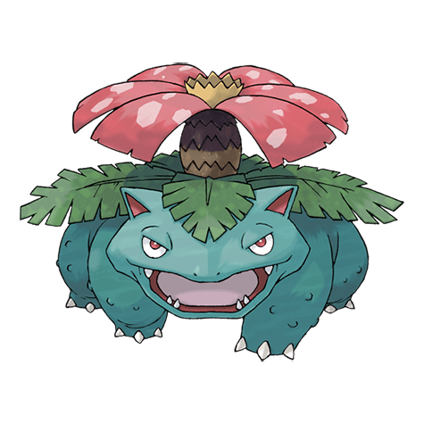

Венузавр

Венузавр — Покемон первого поколения под номером 3 в Покедекс. Обитает он в регионе Канто и относится к Травяному и Ядовитому типу. Это последняя постоянная форма эволюции стартового Бульбазавра. На спине Венузавра есть большой цветок. Считается, что цветок приобретает яркую окраску, если получает много питания и солнечного света. Аромат цветка успокаивает эмоции людей.
Тип и слабости:
Травяной
Ядовитый
Эволюция
# 003 Венузавр
Финальная стадия